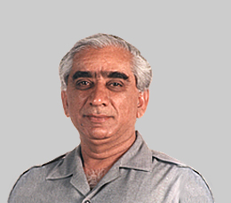

 <section>
    <div class="container">                
        <div class="row">            
            <div class="col">
                
            </div>
            <div class="col">
                 <h4>Name: {{author.author_Name}} </h4>
                 <h4>Country: {{author.country}}</h4>
                 <h4>Date of Birth: {{author.year_of_Birth}}</h4>
            </div>   
        </div>
        <div class="clearfix">            
    </div>
         <!-- <div> 
            <strong>Biography:</strong> Jaswant Singh (born 3 January 1938) is a retired officer of the Indian 
            Army and a former cabinet minister. He is a founding member of the Bharatiya Janata Party.He is
             one of India's longest serving parliamentarians, having been a member of one or the other house 
             almost continuously between 1980 and 2014.
        </div> -->
        <!-- <div>
            <ul><strong>Books:</strong>
                <li>Jinnah: India-Partition-Independence</li>
                <li>A Call to Honour: In Service of Emergent India</li>
                <li>India at Risk: Mistakes, Misconceptions and Misadventures of Security Policy</li>                
                <li>Defending India</li>
                <li>Conflict And Diplomacy: Us And The Birth Of Bangladesh, Pakistan Divides</li>
                <li>Travels in Transoxiana: In the Lands Over the Hindu Kush and Cross the Amu Darya</li>
                <li>The Audacity of Opinion</li>                
            </ul>    

        </div>  -->
    </div>        
                

</section>